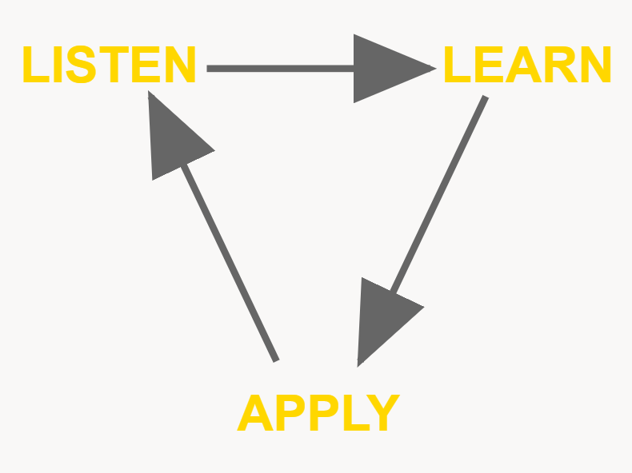

Why ITG
Our goal is to listen, learn, and apply.

- We begin by meeting with the team and understanding the current business process and the current painpoints everyone is dealing with.
- Moving to reviewing the current setup of the system.
- Then begin designing solutions and presenting to all team members.
- Finally, make the updates on live system and always available for support.